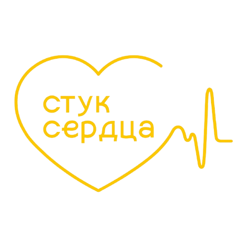
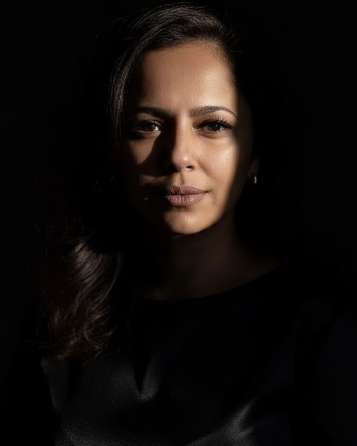

Поддержка и доверие себе
Помогаю вам научиться слышать себя, доверять внутреннему голосу и опираться на собственную силу, а не только на внешние обстоятельства.

Стук сердца
Я не обещаю чудеса, я помогаю им случиться. Мои практики и мой голос вернут вам уверенность, спокойствие, деньги и любовь. Шагните в жизнь, которой вы достойны.
Я сама прошла через боль и за 18 лет помогла тысячам женщин войти в их новую реальность, и вы тоже сможете.
Меня зовут Сурия. Я прошла через предательства, сложные кармические узлы и тяжёлые уроки, которые казались непосильными. Знаю, как бывает больно, когда рушится опора, и даже самые близкие люди причиняют боль.
Мой опыт научил меня подниматься с самого дна, шаг за шагом возвращать веру в себя и находить свет даже в самых тёмных периодах жизни. Сейчас я рядом с теми, кто готов пройти путь к новой жизни.
Здесь мы с вами докопаемся до сути ваших проблем, разберём причины повторяющихся историй и вернем вам уверенность в себе.
Помогаю вам научиться слышать себя, доверять внутреннему голосу и опираться на собственную силу, а не только на внешние обстоятельства.
Работаем с тяжёлыми переживаниями и кармическими узлами, которые сдерживают ваш путь, чтобы вы могли дышать свободнее и чувствовать больше жизни.
Помогают увидеть глубинные причины боли и путаницы, подсвечивают, в каком направлении двигаться дальше и какие шаги готовы к проживанию.
Здесь вы можете выбрать формат, который лучше всего вам откликается: диагностика, энергочистка, авторские таро-расклады, медитации и аудиопрограммы

Глубокие расклады для понимания, что именно мешает жить, на уровне психики, подсознания и энергии
Выбрать диагностикуЭнергетическая чистка, снимающая блоки, зажимы и родовые программы, разрушающие жизнь
Запросить чисткуАвторские таро-расклады, составляемые персонально под любую вашу ситуацию и вопрос.
Узнать о раскладахМедитации и аудиопрограммы для глубокой и эффективной работы с подсознанием.
Узнать о аудиопрограммахСофия, Добрый вечер!! Огромная благодарность Сурие за разбор ❤️❤️❤️❤️. Проживаю разные эмоции 👍. Так много откликается. Голос Сурии завораживает. И как глубоко касается разбор. Думаю ещё буду много раз переслушивать 🙏🙏 Есть что менять. И честно аж слёзы на глазах, мне так сейчас нужен был человек, который тихим голосом поддержит и откроет дверь в ту часть меня, которая была закрыта ❤️❤️❤️❤️
Добрый вечер, Сурия! Я аж дышать перестала, от услышанного! Вы настолько правдиво, описали Павла, я дар речи потеряла 😁😁😁😁! Как будто вы сделали рентген у этого мужчины! 😂😂😂 ОГРОМНОЕ ВАМ, СПАСИБО!😁🌷🌷🌷Все В ТОЧКУ! Теперь я знаю что могу к вам обратиться с любым вопросом!!! 🌷🌷🌷 Буду НАБЛЮДАТЬ, И ИДТИ ДАЛЬШЕ!!😊😊😊
Спасибо что проявили свет на ситуацию нашу, займусь собой, как раз слушаю ваши медитации и аудио программу. Хотела вас поблагодарить и за это тоже, аудио программа на разрыв кармических привязок - это что-то просто.... Первый раз слушала когда, я рыдала так сильно, сейчас я засыпаю, но слышу всё, вот где-то в пространстве нахожусь, это очень непривычно так, но мне легче становится! Я очень рада, что вы попались мне, Я просто очень благодарна судьбе за это!
Сурия, милая моя, родная!!!
❤️❤️❤️
Я такая счастливая от этого расклада, от ваших ( твоих ) слов, такое безумное внутри
счастья, мурашки и слёзы просто, слёзы очищения... Я просто безумно чувствую любовь
внутри, ко всему, просто тотальную!!! Я обнимаю и обожаю тебя (если позволишь на "ты" )
❤️❤️❤️😘 Да, я сейчас прослушаю подкаст, укладываю свою малышку и всё ещё раз
переслушаю!
Абонемент прям Вау!
Вот просто выше всех похвал!
Первый расклад в живом формате, не
просто
формат расклада, а общение с Сурией, такое живое, поэтапная, о жизни, о делах. Большой плюс
в том, что в моменте задаёшь все интересующиеся вопросы и получаешь глубокие и насыщенные
ответы. А дальше начинается не менее интересное - 4 недели с феей, которая перевернула всю
мою жизнь на высокий уровень!
Вот такой замечательный подарок я себе сделала на день
рождения!
Очень понравилось! Прям влюбилась в абонемент, обязательно повторю!
Моя дорогая Сурия! Я очень долго искала такую как Вы... И уже на стадии диагностики я поняла - Вы та самая, кто знает и поможет, Я ни секунды не колебалась в решении довериться Вам. И сегодня чистка только закончилась, Я ни секунды не колебалась в решении довериться Вам. И сегодня чистка только закончилась, а я уже чувствую изменения я в себе, в своих чувствах и мыслях, хотя твёрдо знаю что это только начало... Я благодарю Бога за то что Вы есть и наши пути пересеклись. Вы не просто сделали то что я просила: Вы провели огромнейшую работу - затрагивая все сферы моей жизни и даже моих дочерей. Всё происходило размеренно и плавно с ненавязчивым контролем. Я не думала что так бывает, но теперь знаю: чудеса случаются, главное верить... Это чудо - Вы Сурия. И я безгранично в Вас верю!!!❤️
Если вы чувствуете, что пришло время менять свою жизнь, важно не оставаться с этим в одиночестве. Я и моя команда рядом, чтобы поддержать вас на этом пути.
Для консультации или понимания, с чего лучше начать, напишите моей ассистентке Софии в Telegram или моей ассистентке Марии в VK.
Telegram для связи: ВКонтакте для связи:
Присоединяйтесь в моих пространствах
Я делюсь лайфхаками, практиками, мини-медитациями и поддержкой для тех, кто проходит сложные периоды и ищет выход